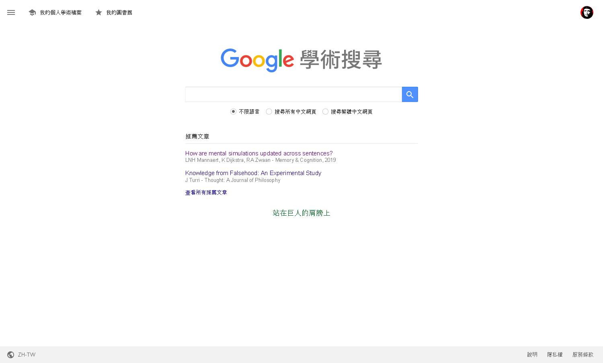
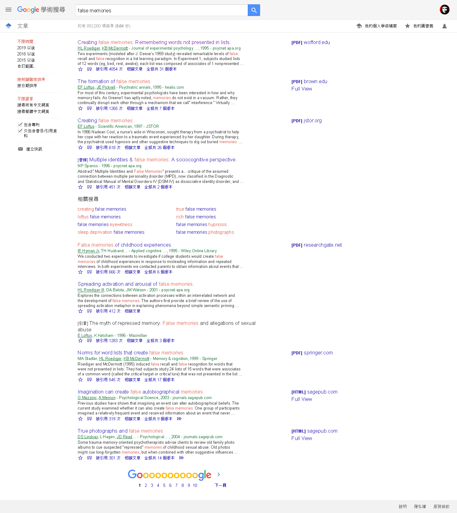

2 科學思考輔助工具
這個單元介紹學習與執行研究過程經常運用的輔助工具。各種工具都能免費取用，而且持續 更新。建議讀者初次閱讀約略了解這個單元提供的資訊即可，其後學習遇到需要運用某種工具時，再來參閱相關資訊。
本單元尚在開發中，完成後隨工具更新狀況修改。
2.1 知識管理
文明社會的基石是有典藏與傳播知識產物的機構，很多人首先會想到的機構應該是圖書館。一切資訊都可以數位化與網路化的今日，越來越少人依賴實體圖書館提供的服務。這種趨勢帶來知識的碎形化，許多學生要寫報告時都直接上網收集資料，報告內容欠缺組織與忽視資料來源。本節分享google scholar1搭配Zotero2的使用心得，讀者可依個人習慣建立個人化知識管理系統。
讀者如果有註冊google帳號，登入並開啓首頁會見到如圖@ref(fig:ch02-fig01)的頁面。google scholar除了提供如google搜尋引擎一樣的服務，讀者可以文獻關鍵詞、標題、作者姓名等訊息搜尋，還有彙整個人已發表文獻的我的個人學術檔案，以及集合個人文章曾引用文獻的我的圖書館。
檢索結果如同平常使用google搜尋所得，不過google scholar的搜尋結果是依文獻被引用次數排序，例如圖@ref(fig:ch02-fig02)。搜尋結果所附連結通常是登錄出版該篇論文的期刊或書籍之資料庫，如果讀者上網的網域不是學術機構，或者所在機構沒有訂購該資料庫，只能取得這篇論文的書目，無法取得全文內容。

如何整理及分享個人收集的書目資訊，我曾寫了篇如何使用Zotero的網誌3。在此補充建議：如果讀者需要與同學共同編輯報告，請務必註冊Zotero帳號，並創建共享文獻庫，在協作文件一節將說明如何幫助提高報告寫作的效率及可信度。
2.2 開源實驗平台
現在已出現許多支援遠端登入的問卷及實驗平台，有幾種不需要研究者支付訂閱費用的開源軟體。以下推薦三種，我將不定期於個人youtube頻道更新教學影片4：
| OpenSesame | formr | psytoolkit | |
|---|---|---|---|
| 執行平台 | Windows或Mac個人電腦5 | formr網站6 | psytoolkit網站7 |
| 註冊方式 | 下載安裝 | 寄信告知作者 | 依首頁說明操作 |
| 建議用途 | 需要反應計時、精準呈現刺激的實驗 | 格式化問卷、互動圖表 | 需要計時的實驗、格式化問卷 |
| 匯出資料格式 | 長表格csv | csv, json, xlsx等 | 長表格csv,個別參與者txt |
| 學習資源 | 官方網站與youtube頻道 | 官方網站 | 官方網站與youtube頻道 |
2.3 開源統計軟體
前一節介紹的三種實驗平台匯出的實驗資料都是長表格，每一列(row)只包含一個觀察值，除了OpenSesame與formr有系統預設欄位資料， psytoolkit的每一欄都是實驗腳本裡有設定的變項。每一份匯出的檔案都是以主要依變項的反應單位排列，只要事先設定的分析計畫要以主要依變項的平均值進行分析，就可以使用試算表的樞紐分析功能計算。
樞紐分析的結果是常用統計分析方法的資料集合，如t檢定、變異數分析。我建議使用JASP與jamovi等開源統計軟體進行分析，使用方式可參考我的網誌8。
2.4 協作文件
在此建議參考這個單元的學生與老師，運用google doc編輯與批改報告。除了google doc範本庫9有提供APA報告範本，還有許多有助個人與協同編輯的功能。這一節分享我的使用心得。
要使用文件協同編輯功能，只要設定共同作者有編輯文件權限。google doc剛上架時已經有版本紀錄功能，最新版支援版本紀錄命名。老師可運用命名功能，設定批改原則，引導合作報告的每位學生設定各自貢獻的內容，並對個人的貢獻負責。
引用與引述是學生寫作報告最常出錯的部分。搭配前面介紹的Zotero，分享一些學生與老師可行的建議：
運用Zotero條目筆記，保存閱讀文獻的心得。透過共享文獻庫，參與者可看到彼此的筆記，學生個人自創的筆記可做為正式報告的素材，做為個人貢獻的證據，老師能建立明學的寫作指導與批改標準。
使用Zotero connector管理google docs的文內引用及參考文獻列表。只要使用google chrome或firefox登入google文件編輯，有安裝Zotero本機程式與瀏覽器插件connector，編輯視窗的選單會多出Zotero，如圖@ref(fig:ch02-fig03)。每次開啟文件同時啟動本機程式，按下Zotero選單並選擇加入文內引用，經過連結google帳戶、選擇引用格式兩個步驟後，就可以像網誌10示範一樣，編輯在文件中引用的樣式，增刪引用的文獻。整份文件完成後，再用Zotero選單的功能置入文獻列表。
- 統計數值與圖表是學生報告另一個學習難題。例如所有套裝統計軟體都以表格輸出統計檢定結果，但是APA寫作手冊建議在報告中使用縮寫，與文字並陳。依我的教學經驗，除非有正式寫作的需要，學生通常缺乏學習動機。另外，讓學生了解正確的統計方法使用觀念、以及識讀能力，是比依格式寫作更重要的課題。我的建議是老師根據學生學習正式學術寫作的興趣，設定合理的統計數值及圖表的寫作標準。有心學習正式寫作的學生，可參考動態文件的寫作方法11。
google scholar網址~ https://scholar.google.com 依瀏覽器預設語系自動切換呈現語言。↩︎
Zotero官方網站~ https://www.zotero.org/↩︎
網誌網址~ https://scchen.com/zh/post/zotero/↩︎
個人youtube頻道~ https://www.youtube.com/channel/UCaiYKSQCNNR-UFBSfuWU1-g↩︎
OpenSesame官方網站~ https://osdoc.cogsci.nl/↩︎
formr官方網站~ https://formr.org/↩︎
psytoolkit官方網站~ https://www.psytoolkit.org/↩︎
開源統計軟體網誌~ https://scchen.com/zh/post/jasp-jamovi/↩︎
如果讀者使用自行註冊的google帳號，可自行於公用範本庫https://docs.google.com/templates 取得英文版APA報告範本。若學生透過學校訂購的G Suite使用google提供的服務，不一定能取得公用範本庫。建議老師提供自創的範本，做為學生寫作報告的規範。↩︎
網誌網址~ https://scchen.com/zh/post/zotero/↩︎
請參考我的網誌~ https://scchen.com/zh/post/dynamic-writing/↩︎